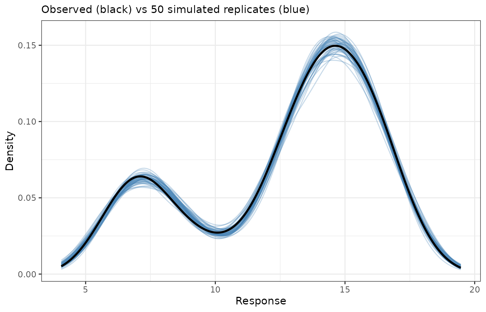
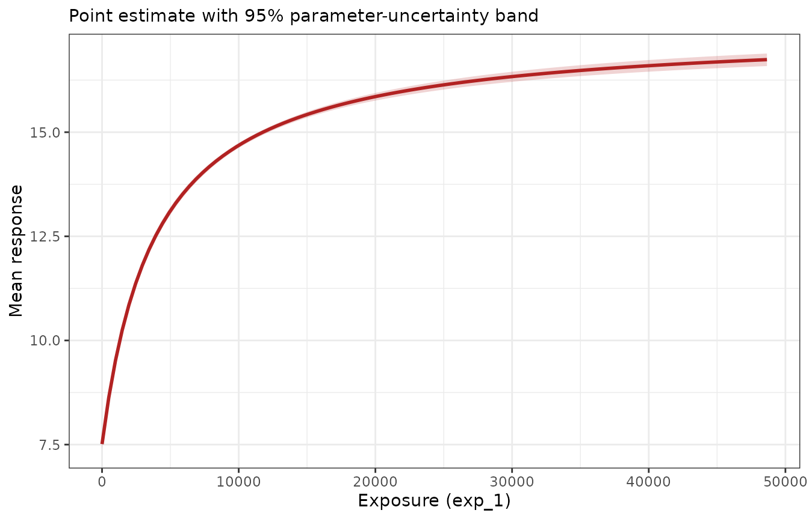

Simulating from Emax models
Source:vignettes/articles/simulating-from-emax-models.Rmd
simulating-from-emax-models.RmdOnce a model has been fitted, it is often useful to generate new data from it: for predictive checks, for simulation-based intervals, or as the input to some downstream analysis. The package offers two tools for this, operating at different levels:
-
simulate()is the high-level method. It generates complete replicate datasets from a fitted model, automatically propagating the uncertainty in the parameter estimates as well as the observation-level noise. -
emax_fun()is the low-level building block. It extracts the deterministic Emax prediction function from a fitted model, letting you evaluate the curve at any parameter values and any data you choose — the raw material for building custom simulations by hand.
This article focuses on continuous outcomes fitted with
emax_nls() and then shows that both tools work identically
for binary outcomes fitted with emax_logistic(). Both rely
on the mvtnorm package for drawing parameter values, so
it needs to be installed.
We use a fitted continuous model throughout:
mod <- emax_nls(
structural_model = rsp_1 ~ exp_1,
covariate_model = list(E0 ~ cnt_a, Emax ~ 1, logEC50 ~ 1),
data = emax_df
)The simulate() method
Calling simulate() generates one or more replicate
datasets. The number of replicates is set by nsim, and a
seed can be supplied for reproducibility:
sim1 <- simulate(mod, nsim = 1, seed = 1)
sim1
#> # A tibble: 400 × 11
#> dat_id sim_id mu val E0_cnt_a E0_Intercept Emax_Intercept
#> <int> <int> <dbl> <dbl> <dbl> <dbl> <dbl>
#> 1 1 1 14.4 14.6 0.487 5.10 9.91
#> 2 2 1 15.5 15.1 0.487 5.10 9.91
#> 3 3 1 5.69 5.94 0.487 5.10 9.91
#> 4 4 1 13.3 13.7 0.487 5.10 9.91
#> 5 5 1 13.5 13.8 0.487 5.10 9.91
#> 6 6 1 16.8 16.7 0.487 5.10 9.91
#> 7 7 1 17.1 17.9 0.487 5.10 9.91
#> 8 8 1 14.7 14.9 0.487 5.10 9.91
#> 9 9 1 7.45 7.14 0.487 5.10 9.91
#> 10 10 1 12.9 11.8 0.487 5.10 9.91
#> # ℹ 390 more rows
#> # ℹ 4 more variables: logEC50_Intercept <dbl>, rsp_1 <dbl>, exp_1 <dbl>,
#> # cnt_a <dbl>What simulate() actually does
Generating a replicate involves two distinct sources of randomness,
and simulate() accounts for both:
-
Parameter uncertainty. A fresh parameter vector is
drawn from the multivariate normal distribution implied by the estimates
and their covariance matrix, i.e. from
using
coef(mod)andvcov(mod). This represents how uncertain we are about the fitted parameters themselves. - Observation noise. Given that parameter draw, the Emax mean is evaluated at each observation’s exposure and covariates, and a response is generated around it. For a continuous model this adds Gaussian residual noise, with .
Because both sources are included, the simulated val
column behaves like a genuine new dataset drawn from the fitted model,
not merely a noiseless prediction. (This is what distinguishes
simulate() from
predict(..., interval = "prediction"), which reports an
analytic interval for the mean rather than generating replicate datasets
you can analyse downstream.)
The output format
The result is a tidy, long-format tibble with
nsimnobs
rows. For a single replicate that is one row per observation:
names(sim1)
#> [1] "dat_id" "sim_id" "mu"
#> [4] "val" "E0_cnt_a" "E0_Intercept"
#> [7] "Emax_Intercept" "logEC50_Intercept" "rsp_1"
#> [10] "exp_1" "cnt_a"The columns are:
-
dat_id— an index identifying the original observation (row of the data). -
sim_id— which replicate the row belongs to (1tonsim). -
mu— the Emax mean for that observation under the sampled parameters. -
val— the simulated response (the mean plus residual noise). - the sampled parameter values (
E0_cnt_a,E0_Intercept, …), repeated across all rows of a replicate — one parameter draw is used per replicate. - the original data variables used by the model (
rsp_1,exp_1,cnt_a), carried along so you can group or plot by exposure and covariates.
Requesting several replicates stacks them, and the sampled parameters vary from one replicate to the next while staying constant within a replicate:
sims <- simulate(mod, nsim = 50, seed = 1)
dim(sims)
#> [1] 20000 11
# one parameter draw per replicate
unique(sims[sims$sim_id <= 3, c("sim_id", "E0_Intercept", "Emax_Intercept")])
#> # A tibble: 3 × 3
#> sim_id E0_Intercept Emax_Intercept
#> <int> <dbl> <dbl>
#> 1 1 5.10 9.91
#> 2 2 4.99 10.1
#> 3 3 5.01 10.1A predictive check
A natural use of these replicates is a predictive check: if
the model is adequate, the distribution of simulated responses should
resemble the distribution of the observed response. Overlaying the
density of the observed rsp_1 on the densities of several
simulated replicates gives a quick visual check:
ggplot(sims, aes(val, group = sim_id)) +
geom_line(stat = "density", colour = "steelblue", alpha = 0.3) +
geom_line(
aes(rsp_1),
data = emax_df,
stat = "density",
inherit.aes = FALSE,
colour = "black",
linewidth = 1
) +
labs(
x = "Response",
y = "Density",
subtitle = "Observed (black) vs 50 simulated replicates (blue)"
)
The observed distribution sits comfortably within the spread of the simulated replicates, which is what we would hope to see from a well-fitting model.
The emax_fun() tool
Where simulate() bundles parameter sampling and noise
generation together, emax_fun() exposes the deterministic
core: the Emax prediction function itself. It returns a function of two
arguments, param and data, both of which
default to the values used when the model was fitted.
f <- emax_fun(mod)
# with no arguments, it reproduces the fitted values
head(f())
#> [1] 14.501 15.591 5.648 13.402 13.562 16.852
head(fitted(mod))
#> [1] 14.501 15.591 5.648 13.402 13.562 16.852Because you control both arguments, you can evaluate the model in
situations the original fit never saw. Supplying param lets
you ask counterfactual “what if the parameters were different?”
questions — for example, setting the baseline intercept to zero:
alt <- coef(mod)
alt["E0_Intercept"] <- 0
head(f(param = alt))
#> [1] 9.4458 10.5365 0.5931 8.3477 8.5067 11.7967Supplying data lets you evaluate the curve at exposures
and covariate values of your choosing — for instance, tracing the
dose-response relationship over a grid of exposures while holding a
covariate fixed:
grid <- tibble(exp_1 = c(0, 1000, 4000, 8000, 20000), cnt_a = 5)
f(data = grid)
#> [1] 7.486 9.520 12.533 14.188 15.828For an emaxnls model the returned values are on the
response scale. (For an emaxlogistic model,
emax_fun() applies the inverse-logit transform so the
values are probabilities — see below.)
Building a custom simulation
emax_fun() is the tool to reach for when
simulate() does not do exactly what you need and you want
to assemble the pieces yourself. As an illustration, we can build a
dose-response curve with a parameter-uncertainty band by combining
emax_fun() with a manual parameter draw — reproducing, at a
lower level, the parameter-sampling step that simulate()
performs internally.
The recipe is: draw many parameter vectors from the estimated sampling distribution, evaluate the curve over an exposure grid for each draw, and summarise the resulting family of curves pointwise.
set.seed(1)
n_draws <- 500
draws <- mvtnorm::rmvnorm(n_draws, mean = coef(mod), sigma = vcov(mod))
colnames(draws) <- names(coef(mod))
# exposure grid at an average covariate value
curve_grid <- tibble(
exp_1 = seq(0, max(emax_df$exp_1), length.out = 100),
cnt_a = mean(emax_df$cnt_a)
)
# evaluate the Emax curve for every parameter draw
curves <- apply(draws, 1, function(p) f(data = curve_grid, param = p))
# summarise pointwise across draws
band <- tibble(
exp_1 = curve_grid$exp_1,
fit = f(data = curve_grid),
lwr = apply(curves, 1, stats::quantile, probs = 0.025),
upr = apply(curves, 1, stats::quantile, probs = 0.975)
)
ggplot(band, aes(exp_1)) +
geom_ribbon(aes(ymin = lwr, ymax = upr), fill = "firebrick", alpha = 0.2) +
geom_line(aes(y = fit), colour = "firebrick", linewidth = 1) +
labs(x = "Exposure (exp_1)", y = "Mean response", subtitle = "Point estimate with 95% parameter-uncertainty band")
Note that this band reflects only parameter uncertainty,
because we summarised the mean curve mu and never added
residual noise — it is the analogue of a confidence band. Adding a step
that draws rnorm(..., sd = sigma(mod)) around each
evaluated mean would turn it into a prediction band that also captures
observation noise, which is precisely the extra ingredient
simulate() supplies for you. This is the essential
trade-off between the two tools: simulate() is convenient
and complete, while emax_fun() is transparent and fully
under your control.
The same tools for binary outcomes
Both tools work unchanged for emaxlogistic models; only
the scales differ.
mod_b <- emax_logistic(
structural_model = rsp_2 ~ exp_1,
covariate_model = list(E0 ~ cnt_a, Emax ~ 1, logEC50 ~ 1),
data = emax_df
)For simulate(), the mu column holds the
fitted probability for each observation under the sampled
parameters, and val is a 0/1 outcome drawn from
rather than a mean plus Gaussian noise:
sim_b <- simulate(mod_b, nsim = 2, seed = 1)
head(sim_b)
#> # A tibble: 6 × 11
#> dat_id sim_id mu val E0_cnt_a E0_Intercept Emax_Intercept
#> <int> <int> <dbl> <dbl> <dbl> <dbl> <dbl>
#> 1 1 1 0.632 0 0.623 -4.61 6.93
#> 2 2 1 0.857 0 0.623 -4.61 6.93
#> 3 3 1 0.0209 0 0.623 -4.61 6.93
#> 4 4 1 0.349 0 0.623 -4.61 6.93
#> 5 5 1 0.489 0 0.623 -4.61 6.93
#> 6 6 1 0.970 1 0.623 -4.61 6.93
#> # ℹ 4 more variables: logEC50_Intercept <dbl>, rsp_2 <dbl>, exp_1 <dbl>,
#> # cnt_a <dbl>
# simulated responses are binary
sort(unique(sim_b$val))
#> [1] 0 1For emax_fun(), the returned function gives predicted
probabilities directly (the inverse-logit transform is applied
internally), so its values always lie in
:
Everything else — custom parameter values, custom data grids, and building your own simulations on top of the prediction function — carries over exactly as in the continuous case.
Notes
- Both
simulate()andemax_fun()’s uncertainty workflows draw parameters with mvtnorm, which must be installed;simulate()errors informatively if it is missing. -
simulate()captures two sources of variability (parameter uncertainty and observation noise); a band built fromemax_fun()captures only whatever you choose to include, so decide deliberately whether you want a confidence-style band (means only) or a prediction-style band (means plus residual noise). - For a quick analytic interval on the mean or a single new
observation, prefer
predict(..., interval = ...), described in the model-fitting articles. Reach forsimulate()andemax_fun()when you need replicate datasets or bespoke simulation logic.